整个业界在前端框架不断迭代中，也寻找到了许多突破方向，例如跨平台中的RN、Flutter，服务端GraphQL、Serverless，前端和客户端的融合越来越紧密，前端在Node和Electron的加持下，也扩展了自己的版图到服务端和桌面。
同时，随着前端开发越来越复杂，整个前端研发也经历了人工化->工具化->工程化->智能化的演变。目前各个大厂在工程化实践不断迭代，出现了许多Low/No Code等前端智能化解决方案，工程化实践也深入到研发的各个环节，不断提升前端研发的标准化能力。而且，随着机器学习的加入，各类UI2Code的解决方案也开始出现，前端研发进入了一个完全不同的时代。
随着端上能力的不断增强，现在在端上做的事情越来越多。首先，数据可视化方向，各类图表、地图、3D等等数据可视化的尝试变得越来越多。其次，伴随着人工智能的加持，在端上的人工智能应用也变的普及，减少了服务端的交互，提高了系统的实时响应能力。最后，随着Webassembly等技术的应用，有可能将前端运行能力再提升一个档次，可以进行更为复杂的端上计算。
为了了解当前前端的发展趋势，让我们从国内各大互联网大厂开始，了解他们的最新动态和未来规划。
上一篇已经详尽介绍了阿里巴巴集团整体技术体系涵盖：基础设施、服务层、应用层、UI组件层、跨平台、工程化、智能化，可以看到许多比较前沿的探索，对于想要了解前端发展趋势的同学非常有帮助。建议没有看过的同学先看阿里篇。
这一篇从百度讲起。
百度进入2019年业务上就一直萎靡不振，团队、组织架构上也不断调整，从今年股价走势也能看出发展的确不顺。市值上，也连续被美团、京东超越，自此江湖上再也没有BAT，只剩下AT了。
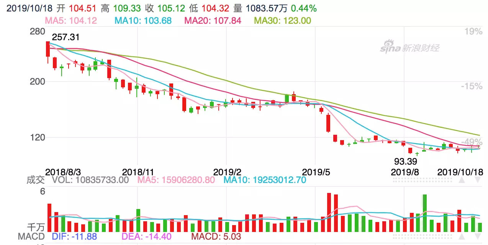
但是，百度作为国内老牌互联网公司，尤其是经历多年搜索大数据量的历练，百度是国内工程师文化最为浓厚的一家公司，被誉为国内互联网的黄埔军校。
因此，业务/市值上虽然已经无法和阿里巴巴、腾讯相提并论，但技术体系依旧还是国内顶尖的水平，下图是百度前端技术体系一览。
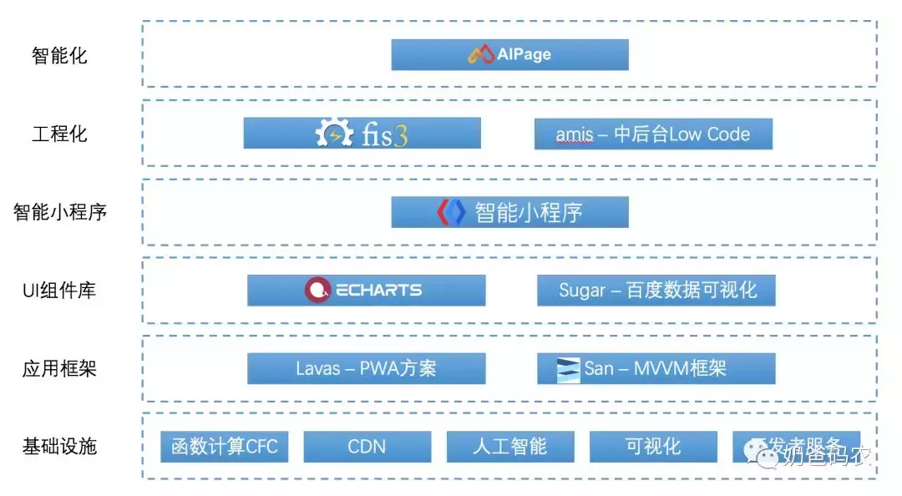
下面大体介绍一下百度前端相关的技术团队(有公开信息的)
百度FEX
FEX名称的来源是FE代表前端（front-end），X代表了每个人都能独当一面，不仅所有事都了解一些，而且还有一个专长。就像X战警一样，每个人都有自己独特的能力，但是作为团队可以一起把事情做得更好。FEX 原属于「Web 前端研发部」，现在核心成员都在百度云，致力于将前端技术做成技术产品。
FEX 致力于针对百度的各产品线在 Web复杂应用，全端应用，全端数据监控及评估和前端工程优化等方面提升开发效率及页面体验，是百度内部最具影响力的前端团队。
FEX 是百度最早的开源实践者，先后推出了 Tangram、UEditor、FIS、GMU、Chassis、KityMinder 等库和工具，现在主要产品有 aipage、sugar 和 amis。
百度EFE
百度EFE（Excellent FrontEnd）技术体系，前身是ECOM前端团队，后经过技术的发展，逐渐形成一套完善的前端技术体系。
EFE技术体系现由多个遵循该技术体系的前端团队所组成。E(Excellent)代表我们追求卓越的技术态度。
EFE团队有非常多的开源项目，最著名的当属可视化图表库ECharts，在百度内部也是一个非常有影响力的团队。
百度EUX
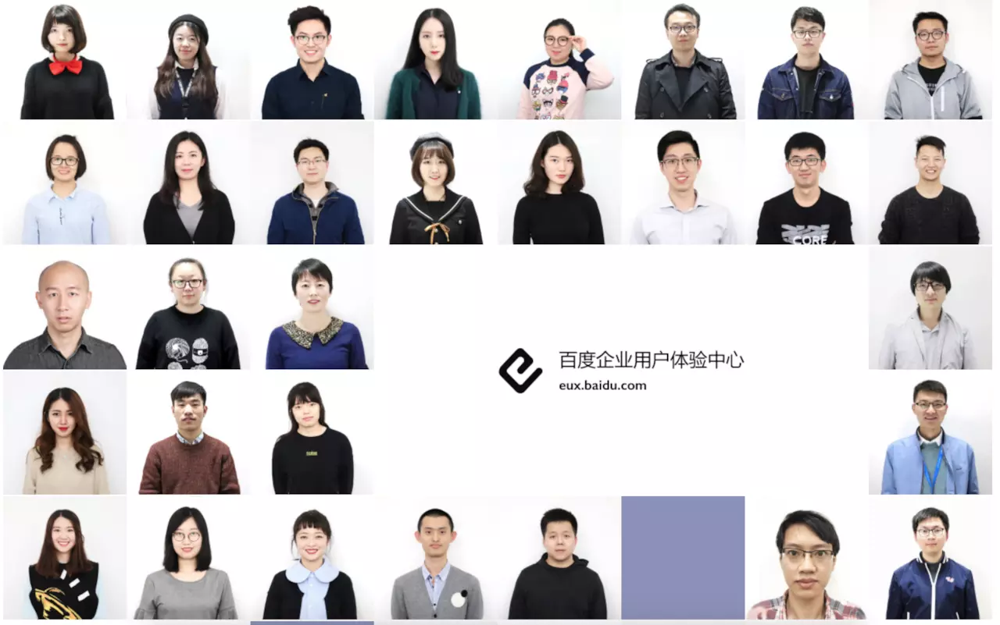
百度企业产品用户体验中心，网站主页上披露的信息不多，顾名思义应该是负责百度企业产品的交互、视觉、前端，从团队照片来看小姐姐比例很高哦。
百度UXC
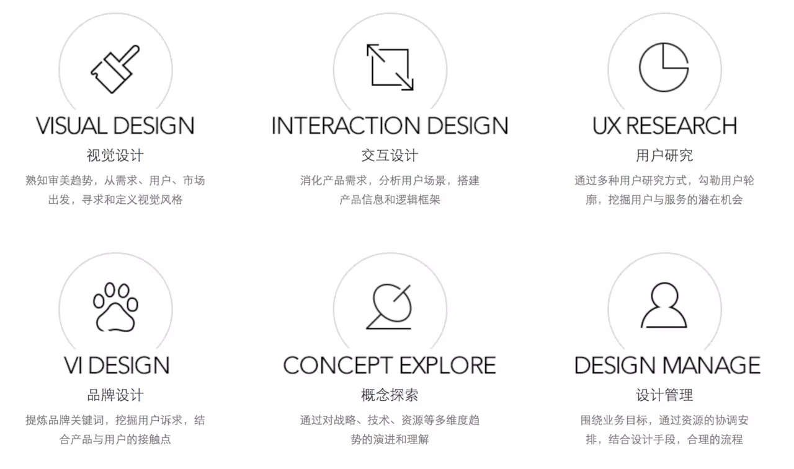
百度用户体验中心，于2016年5月17日成立，由原先的移动用户体验部（MUX）、搜索用户体验部（SUX）、糯米设计团队、凤巢设计团队、Hao123设计团队等在行业内具有影响力的组织合并而成，覆盖了百度85%以上的产品体验设计。UXC品牌与设计日益繁荣的时代共鸣，与设计更具竞争力的未来对接。面对未知与未来，我们将继续推进艺术和科技的完美融合，确立我们独特的审美和影响力，坚守“简单极致”的设计理念，以用户为中心。我们的愿景是打造中国的用户体验标杆，成为令人尊敬的用户体验组织。
坦诚、互助、学习、坚持，这些优秀的品质要继续传承，为我们的使命保驾护航！
类似于阿里，百度也有智能云服务，针对前端领域提供了Serverless函数计算、CDN、人工智能、数据可视化、IoT可视化、安全防护、开发者服务例如AR平台和性能监控APM等等
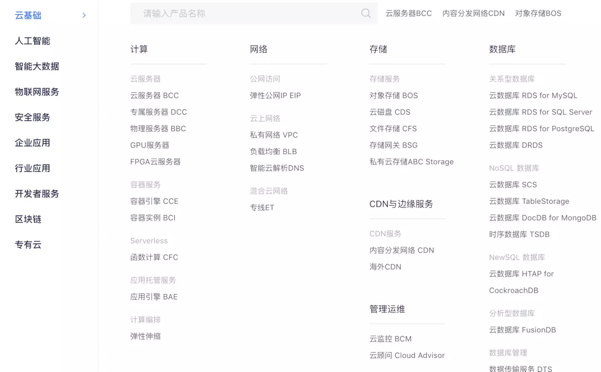
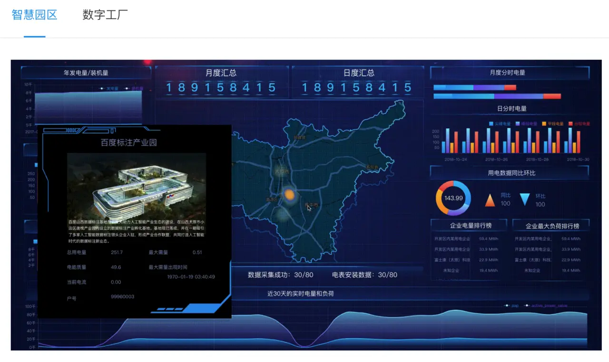
效率云从需求、开发到交付，涵盖研发全流程，通过项目管理平台iCafe、代码管理平台iCode和持续交付平台iPipe，全方位赋能研发，保障研发流程。
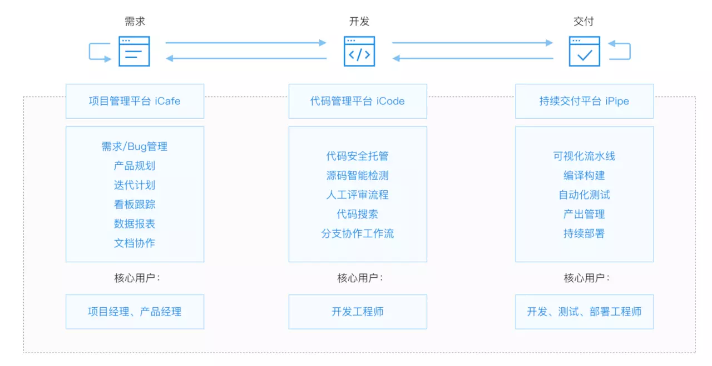
应用性能管理服务APM主要包含拨测与移动端监测两大功能，为您的APP与网站提供真实、持续的性能监测，一并发现APP端到网络层的各样问题，及时定位问题，有效提升用户体验！
LAWAS-基于 Vue.js 的 PWA 解决方案
Lavas 是一套基于 Vue 的 PWA 解决方案，能够帮助开发者快速搭建 PWA 应用，解决接入 PWA 的各种问题，对提升用户体验，用户留存率等有明显提升，且开发者无须过多的关注 PWA 开发本身。
Progressive Web App, 简称 PWA，是提升 Web App 的体验的一种新方法，能给用户原生应用的体验。
PWA 能做到原生应用的体验不是靠特指某一项技术，而是经过应用一些新技术进行改进，在安全、性能和体验三个方面都有很大提升，PWA 本质上是 Web App，借助一些新技术也具备了 Native App 的一些特性，兼具 Web App 和 Native App 的优点。
但是PWA接入还是比较复杂的，涵盖了Web App Manifest、Service Worker、Notification API & Push API、App Shell & App Skeleton、HTTPS、SSR等等，所以接入成本还是比较高的。Lavas基于Vue.js，提供了一套完整的PWA解决方案，可以帮助开发者快速接入PWA，获得Native-Like的体验。
San-MVVM前端框架
San，是一个 MVVM 的组件框架。它体积小巧（< 15K），兼容性好（IE6），性能卓越，是一个可靠、可依赖的实现响应式用户界面的解决方案。
San 通过声明式的类 HTML 视图模板，在支持所有原生 HTML 的语法特性外，还支持了数据到视图的绑定指令、业务开发中最常使用的分支、循环指令等，在保持良好的易用性基础上，由框架完成基于字符串的模板解析，并构建出视图层的 节点关系树，通过高性能的视图引擎快速生成 UI 视图。
San相对于Vue、React等前端框架最大的优势是其体积小巧和性能卓越，可以从下图中看到，在做一些Table的行添加、替换、删除等操作，性能上有一定优势。但它的问题在于生态不足，相对于Vue、React这类成熟框架，缺乏其他诸如工程化、状态管理、测试相关等等工具。
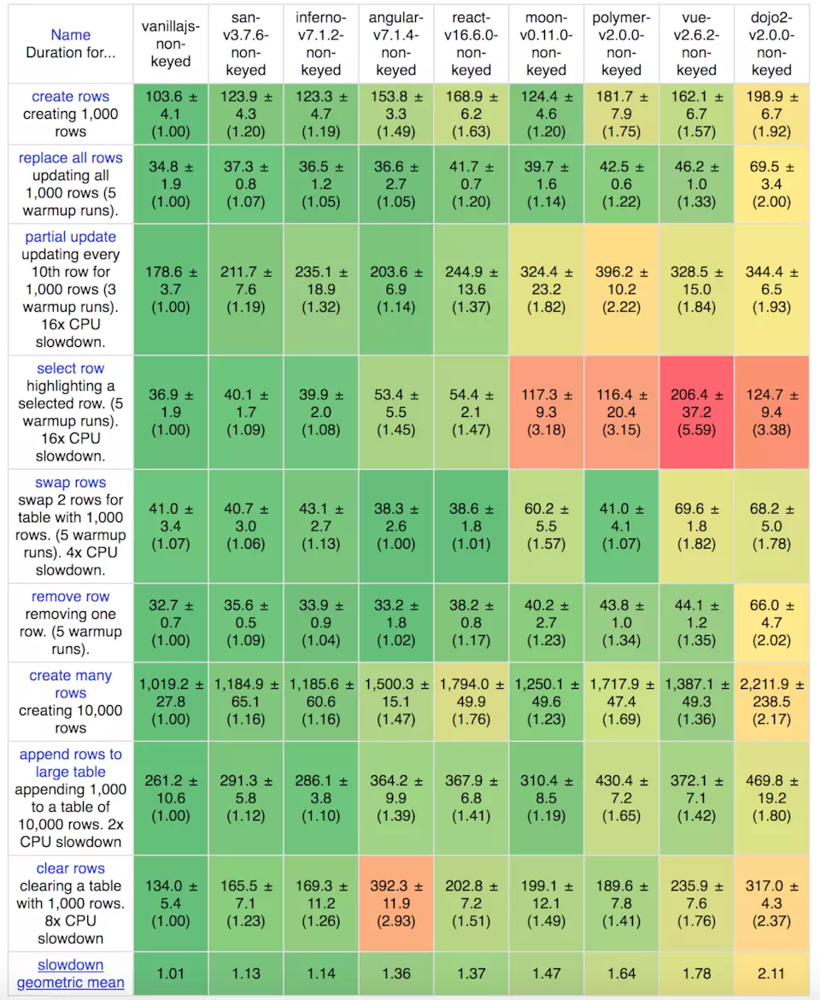
ECharts-数据可视化组件库
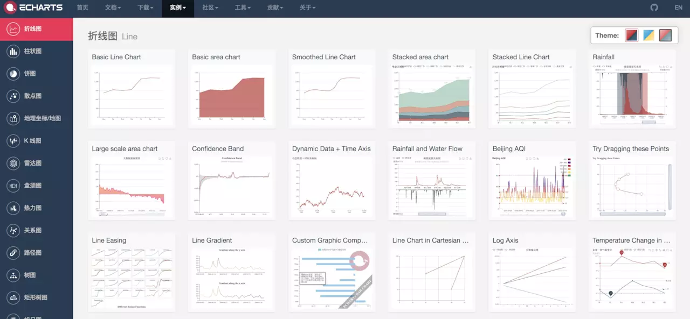
ECharts，一个使用 JavaScript 实现的开源可视化库，可以流畅的运行在 PC 和移动设备上，兼容当前绝大部分浏览器（IE8/9/10/11，Chrome，Firefox，Safari等），底层依赖矢量图形库 ZRender，提供直观，交互丰富，可高度个性化定制的数据可视化图表。
ECharts应该是国内使用最为广泛的数据可视化组件库，其涵盖的范围也非常广泛，从最简单的折线图、柱状图，到高阶展示例如地理位置、3D图形等等，可谓组件库非常丰富应有尽有。
除去丰富的图形组件以外，ECharts能够接收多种数据格式，支持大数据量展示，针对移动端优化，支持数据图表交互性以及无障碍化访问等等。
Sugar-百度数据可视化平台
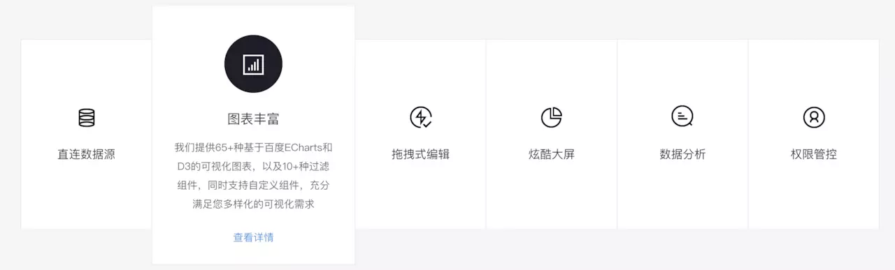
Sugar基于ECharts和D3的可视化图表，提供报表及数据大屏可视化服务，图表组件丰富，拖拽式编辑，支持下钻、联动等交互式数据分析。
Sugar是一个数据可视化平台，包含数据源、组件库、拖拽式布局、炫酷大屏、数据分析和权限管控，提供整套数据可视化全流程的能力，可以用较低成本的实现企业数据可视化的述求。下图展示了Sugar的大屏能力：
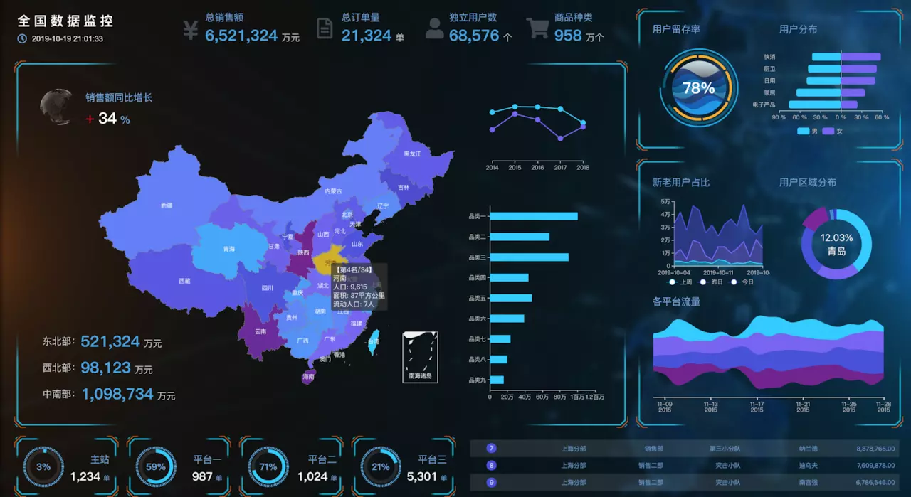
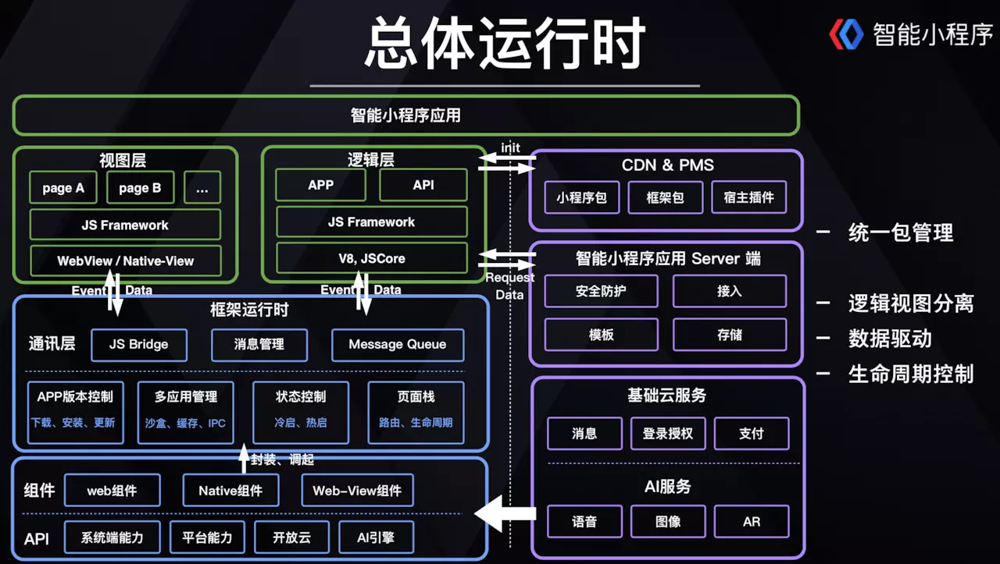
类似于微信小程序，百度智能小程序也是依托于百度Web/APP的生态而产生的一种小程序。在渲染层，基于WebView/Native-View，逻辑层通过JSCore获取底层系统能力，同时也封装了web/native组件，也能够对接百度智能云端，提供基础云服务和AI服务。
在性能方面，只需第一次下载，同时提供预下载、预加载，本地客户端容器等能力，在体验流畅度上要远远好于传统H5。
百度智能小程序最大的亮点在于依托百度生态环境，提供了搜索、信息流、百家号、贴吧的流量，可以最大可能获取到用户资源。
FIS-定制化前端工程化构建
FIS3 是面向前端的工程构建工具。解决前端工程中性能优化、资源加载（异步、同步、按需、预加载、依赖管理、合并、内嵌）、模块化开发、自动化工具、开发规范、代码部署等问题。
FIS涵盖了前端工程化开发的方方面面:
FIS3还支持插件能力，可以方便在编译、构建、打包等环节进行定制化，非常的灵活。不过，这套系统由于研发时间比较久远，当前前端工程化在社区已经有了一套基于Webpack、Babel等比较完整的实践体系，因此FIS3相对就比较难以推广了。
amis-Low Code中后台配置平台
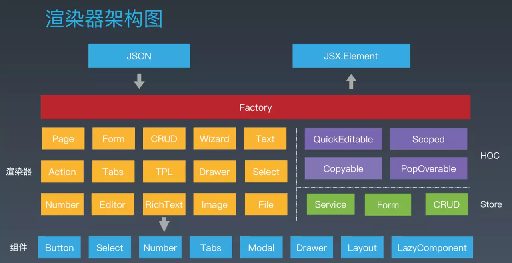
amis前端低代码框架，通过JSON配置就能生成各种后台页面。目前在百度大量用于内部平台的前端开发，已有 100+ 部门使用，创建了 1.2w+ 页面。
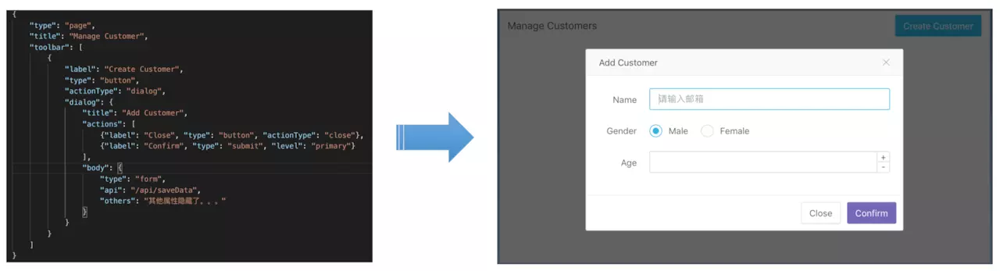
amis支持以下能力：
通过amis，获得了极大的收益，一个中等复杂页面开发只需20分钟，接入部门100+ 个，创建1.2w+ 页面，活跃页面1.8K。
AIPage-智能化建站平台
百度智能门户（AIPage）是百度智能云面向中小企业用户推出的一款智能化构建网站和小程序的SAAS应用产品。用户无需任何编程基础即可上手操作，如同做PPT一样拖拽式设计制作自己的网站和小程序，内置海量行业模版及组件，轻松打造“PC网站、手机网站、百度智能小程序、微信小程序、支付宝小程序”五个端的站点。产品支持电商及预约功能，可广泛适用各类行业用户的实际应用场景。强势集成多项百度搜索权益及AI智能获客能力，帮助企业精准把握每一条商机信息，高效提升推广和转化效果！
AIPage具备可视化设计、海量模版组件、搜索引擎优化、AI智能获客、全终端、全球化、用户营销等特点。PC、H5、百度智能小程序、微信小程序、支付宝小程序5端覆盖，可视化拖拽设计和模板组件可以为客户节省不少建站时间。
百度作为国内老牌的互联网公司，其技术积累还是相当深厚的，可以看到在应用框架、数据可视化、智能小程序、工程化等方面都有很好的沉淀。当然，文章的内容都是基于公开信息整理而成，内部的众多技术框架依旧不得而知，希望有相关信息的同学可以多多交流。
这是大厂前端技术体系解密系列第二篇，后续还会有其他大厂的内容，有兴趣的同学可以关注本公众号【奶爸码农】第一时间获得信息。
『奶爸码农』从事互联网研发工作10+年，经历IBM、SAP、陆金所、携程等国内外IT公司，目前在美团负责餐饮相关大前端技术团队，定期分享关于大前端技术、投资理财、个人成长的思考与总结。